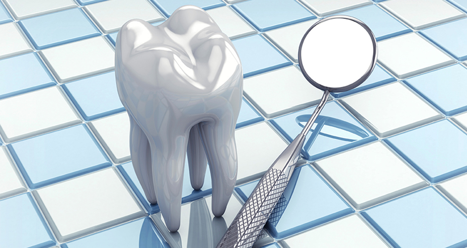
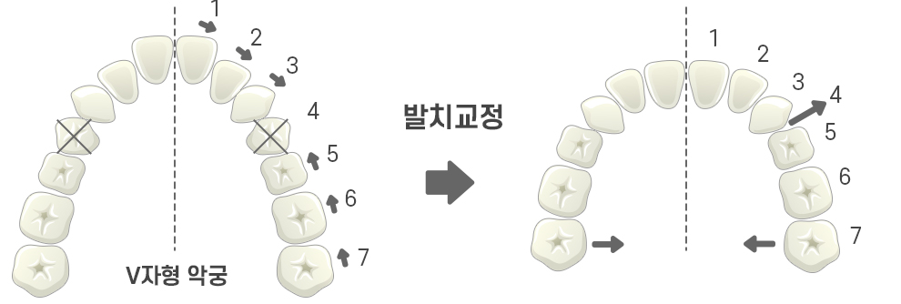
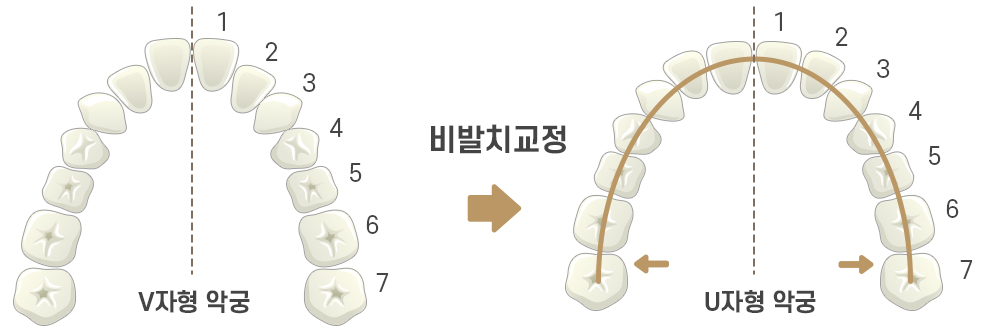

비발치 교정
<%=m_client_en%>
자연치아를 지켜드려요
비발치교정이란?
교정치료시 치열의 불규칙 정도나 돌출의 정도가 심하지 않은 경우,
가급적 자연치아는 최대한 살리면서 치열을 고르게 배열하는
비발치 교정(어금니 후방이동, 치간삭제, 악궁확장 장치)을 하실 수 있습니다.
비발치 교정은 환자분들의 발치부담감을 줄이고,
만족도를 높일 수 있습니다.

비발치교정의 장점
치과 의사가 말하는
비발치교정이 좋은 이유!
- 발치 과정이 생략되어 내원 횟수, 치료기간이 단축된다.
- 발치 통증을 경험하지 않아도 된다.
- 발치 공간을 없애기 위한 치아의 불필요한 이동이 없다.
- 발치교정에 비해 치아교정 기간이 짧다.
- 원하지 않는 안모 변화를 피할 수 있다.
- 교정 후 부정교합 재발의 가능성이 낮다.
발치교정 VS 비발치교정
발치와 비발치의 차이가 무엇일까요?
-

VS
-

비발치교정 치료 방법
발치하지 않아도 돼요! 비발치 교정하는 다양한 방법
-
1
치아들을 옆으로 펼쳐서
악궁확장장치 -
2
전체치아를
뒤로 보내서
후방이동 -
3
치아를
작게 만들어서
치간삭제
-
1
- 악궁확장장치
-
 악궁확장장치를 이용해
악궁확장장치를 이용해
치아와 치아 사이의 공간을 만들어
상악을 연결하는 두 개의 뼈 사이를 확장해
그 공간을 이용하여 교정을 합니다.
약간 들어간 입술 형태,
위축된 치열궁의 환자분께 적합한 방법입니다.
-
2
- 치아후방이동
-
 교정 스크류를 이용해
교정 스크류를 이용해
치아전체를 후방으로 이동시키는 방법입니다.
약간의 돌출입이라면 치아후방이동을 통해
비발치로도 좋은 결과를 볼 수 있습니다.
돌출 경향이 없다면 이 방법을 통해
덧니도 비발치로 치료가 가능합니다.
-
3
- 치간삭제
-
 치간삭제는 치아의 옆면을
치간삭제는 치아의 옆면을
다듬어 공간을 얻습니다.
공간 부족이 심하지 않은 환자에게 적합한 방법입니다.
치아를 다듬는 양은 많지 않습니다.
치아를 건드린다는 점을 환자분들이 염려합니다만
생리적으로 허용되는 그 범주까지만
치아를 다듬는다면 치주 건강에도 좋고
심미적이며 부정교합의 재발도 줄일 수 있는
좋은 치료 방법 입니다.